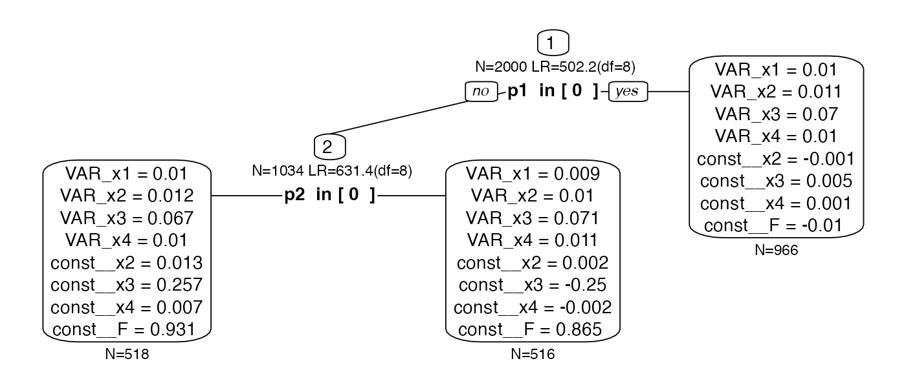
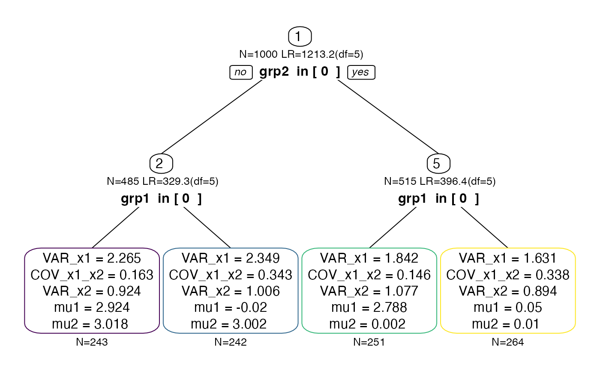
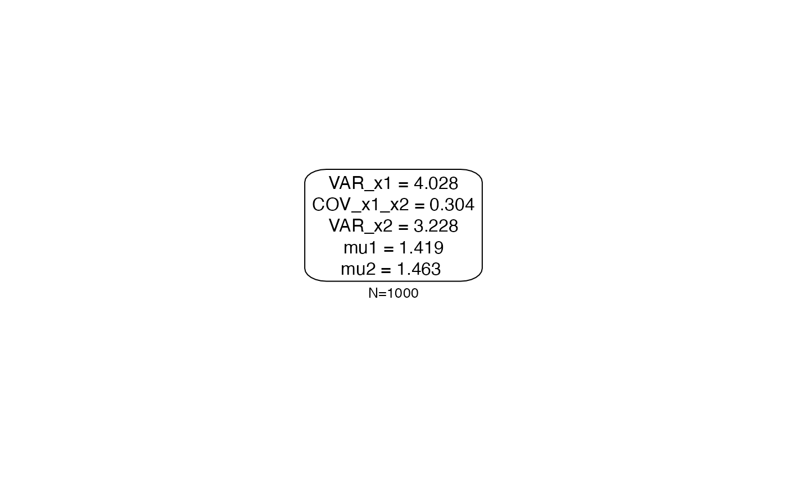

Constraints in semtree
Andreas M. Brandmaier
2020-11-05
constraints.RmdConstraints
Load the package
semtree allows different constraints on the split evaluation (global.invariance, local.invariance, and focus.parameters). These can be set in the following object and then passed to the semtree command:
library(semtree) cnst <- semtree.constraints(local.invariance=NULL, global.invariance=NULL, focus.parameters=NULL) semtree(model.x, data=df, constraints=cnst)
Simulation
To illustrate the invariance constraints, let’s set up a latent factor model with four indicators and simulate some data with a known predictor structure. Let’s create a dataset as follows:
- a latent construct,
lat, measured by four indicators - two predictors
p1andp2 - only one predictor,
p1, has an mean effect on the latent construct - the other predictor,
p2, has an effect on only one indicator (different loadings across groups; DIF)
N <- 2000 p1 <- sample(size=N, x=c(0,1), replace=TRUE) p2 <- sample(size=N, x=c(0,1), replace=TRUE) lat <- rnorm(N,mean = 0+p1) loadings <- c(.5,.8,.7,.9) observed <- lat %*% t(loadings) + rnorm(N*length(loadings),sd = .1) observed[,3]<-observed[,3]+p2*0.5*lat cfa.sim <- data.frame(observed,p1,p2) names(cfa.sim)[1:4] <- paste0("x",1:4)
Here is the OpenMx model specification
require("OpenMx"); manifests<-c("x1","x2","x3","x4") latents<-c("F") model.cfa <- mxModel("CFA", type="RAM", manifestVars = manifests, latentVars = latents, mxPath(from="F",to=c("x1","x2","x3","x4"), free=c(TRUE,TRUE,TRUE,TRUE), value=c(1.0,1.0,1.0,1.0) , arrows=1, label=c("F__x1","F__x2","F__x3","F__x4") ), mxPath(from="one",to=c("x2","x3","x4"), free=c(TRUE,TRUE,TRUE), value=c(1.0,1.0,1.0) , arrows=1, label=c("const__x2","const__x3","const__x4") ), mxPath(from="one",to=c("F"), free=c(TRUE), value=c(1.0) , arrows=1, label=c("const__F") ), mxPath(from="x1",to=c("x1"), free=c(TRUE), value=c(1.0) , arrows=2, label=c("VAR_x1") ), mxPath(from="x2",to=c("x2"), free=c(TRUE), value=c(1.0) , arrows=2, label=c("VAR_x2") ), mxPath(from="x3",to=c("x3"), free=c(TRUE), value=c(1.0) , arrows=2, label=c("VAR_x3") ), mxPath(from="x4",to=c("x4"), free=c(TRUE), value=c(1.0) , arrows=2, label=c("VAR_x4") ), mxPath(from="F",to=c("F"), free=c(FALSE), value=c(1.0) , arrows=2, label=c("VAR_F") ), mxPath(from="one",to=c("x1"), free=F, value=0, arrows=1), mxData(cfa.sim, type = "raw") );
Global Invariance
Global invariance is a relatively naive way of estimating a tree, in which a chosen set of parameters is equal across all leafs. This is achieved by fixing one or more selected parameters to the sample estimate before the tree is grown. Global invariance assures that the chosen parameters don’t differ across the possible subgroups. However, if the parameters do differ, this leads to misspecification and jeopardizes the interpretation of the resulting tree structure. Using this approach is usually not recommended because it’s typically not safe to assume that parameters are identical across a wide range of splits of the data. There may be cases in which it may make sense to constrain loading structures or means but it seems particularly dangerous to constrain variance components with such an approach.
tree.gc <- semtree(model.cfa, data=cfa.sim, constraints= semtree.constraints(global.invariance = c("F__x1","F__x2","F__x3","F__x4"))) #> ✖ Variable p1 is numeric but has only few unique values. Consider recoding as ordered factor. #> ✖ Variable p2 is numeric but has only few unique values. Consider recoding as ordered factor. #> ❯ Global Constraints: #> F__x1 F__x2 F__x3 F__x4 #> ❯ Freely Estimated Parameters: #> VAR_x1 VAR_x2 VAR_x3 VAR_x4 const__x2 const__x3 const__x4 const__F #> ✔ Tree construction finished [took less than a second].
plot(tree.gc)

Even though we retrieve both predictors in the tree, the tree structure does not represent the data generating model (p2 is found to be conditional only on p1>=.5) and the misspecification in the loadings leads to bias in the mean structure.
Local Invariance
Local invariance builds a tree under which all parameters across the leafs of a tree may differ but the chosen parameters may not differ significantly from each other. If they differed significantly, the respective split would not be considered as a valid split and would never be chosen. Local constraints are implemented by means of an additional test of measurement invariance. For each possible split, we fit an additional null model, in which the locally invariant parameters are constrained to be equal across the two resulting daugther nodes of a split. Only if we reject this null hypothesis, we believe that there is measurement non-invariance and disregard the split. A typical use-case is to the set of loadings of a factor model as local.invariance to allow a tree with weakly measurement-invariant leafs.
tree.lc <- semtree(model.cfa, data=cfa.sim, constraints= semtree.constraints( local.invariance= c("F__x1","F__x2","F__x3","F__x4"))) #> ✖ Variable p1 is numeric but has only few unique values. Consider recoding as ordered factor. #> ✖ Variable p2 is numeric but has only few unique values. Consider recoding as ordered factor. #> ❯ No Invariance alpha selected. alpha.invariance set to:0.05 #> ✔ Tree construction finished [took 2s].
Now we find p1 as the only predictor that yields subgroups that pass the measurement invariance test. Even though we have chosen the four factor loadings as local.invariance constraint, they are allowed to differ numerically but there was no significant difference between them.
plot(tree.lc)

Focus Parameters
First, we create some data. Here, we generate 1,000 bivariate observations x1 and x2 gathered in a data frame called obs. Also, there are two predictors grp1 and grp2. Predictor grp1 predicts a mean difference in x1 whereas grp2 predicts differences only in x2.
set.seed(123) N <- 1000 grp1 <- sample(x = c(0,1), size=N, replace=TRUE) grp2 <- sample(x = c(0,1), size=N, replace=TRUE) Sigma <- matrix(byrow=TRUE, nrow=2,c(2,0.2, 0.2,1)) obs <- MASS::mvrnorm(N,mu=c(0,0), Sigma=Sigma) obs[,1] <- obs[,1] + ifelse(grp1,3,0) obs[,2] <- obs[,2] + ifelse(grp2,3,0) df.biv <- data.frame(obs, grp1, grp2) names(df.biv)[1:2] <- paste0("x",1:2)
A tree without constraints should recover both parameters (given large enough sample and effect sizes) because it explores differences in both means and covariance structure of x1 and x2. Here is an OpenMx model specification for a saturated bivariate model:
manifests<-c("x1","x2") model.biv <- mxModel("Bivariate_Model", type="RAM", manifestVars = manifests, latentVars = c(), mxPath(from="x1",to=c("x1","x2"), free=c(TRUE,TRUE), value=c(1.0,.2) , arrows=2, label=c("VAR_x1","COV_x1_x2") ), mxPath(from="x2",to=c("x2"), free=c(TRUE), value=c(1.0) , arrows=2, label=c("VAR_x2") ), mxPath(from="one",to=c("x1","x2"), label=c("mu1","mu2"), free=TRUE, value=0, arrows=1), mxData(df.biv, type = "raw") );
Let’s run this model in OpenMx:
result <- mxRun(model.biv) #> Running Bivariate_Model with 5 parameters summary(result) #> Summary of Bivariate_Model #> #> free parameters: #> name matrix row col Estimate Std.Error A #> 1 VAR_x1 S x1 x1 4.0283800 0.18015521 #> 2 COV_x1_x2 S x1 x2 0.3039196 0.11444978 #> 3 VAR_x2 S x2 x2 3.2282345 0.14437113 #> 4 mu1 M 1 x1 1.4187341 0.06346967 #> 5 mu2 M 1 x2 1.4628999 0.05681795 #> #> Model Statistics: #> | Parameters | Degrees of Freedom | Fit (-2lnL units) #> Model: 5 1995 8233.926 #> Saturated: 5 1995 NA #> Independence: 4 1996 NA #> Number of observations/statistics: 1000/2000 #> #> Information Criteria: #> | df Penalty | Parameters Penalty | Sample-Size Adjusted #> AIC: 4243.926 8243.926 8243.986 #> BIC: -5547.046 8268.465 8252.584 #> CFI: NA #> TLI: 1 (also known as NNFI) #> RMSEA: 0 [95% CI (NA, NA)] #> Prob(RMSEA <= 0.05): NA #> To get additional fit indices, see help(mxRefModels) #> timestamp: 2020-11-05 09:14:24 #> Wall clock time: 0.01647806 secs #> optimizer: SLSQP #> OpenMx version number: 2.18.1 #> Need help? See help(mxSummary)
Now, we grow a tree without constraints:
tree.biv <- semtree(model.biv, data=df.biv) #> ✖ Variable grp1 is numeric but has only few unique values. Consider recoding as ordered factor. #> ✖ Variable grp2 is numeric but has only few unique values. Consider recoding as ordered factor. #> ✔ Tree construction finished [took less than a second].
As expected, we obtain a tree structure that has both p1 and p2 (here we use the viridis colors to give each leaf node a different frame color, which we’ll use later again):
# default white color for all nodes cols <- rep("black", semtree:::getNumNodes(tree.biv)) cols[as.numeric(row.names(semtree:::getTerminalNodes(tree.biv)))] <- viridis:::viridis_pal()(4) #> Registered S3 method overwritten by 'ggplot2': #> method from #> print.element sets plot(tree.biv, border.col=cols)

Let us visualize what this tree is doing. Here is the empirical joint distribution of both x1 and x2:
require("ggplot2") ggplot(data = df.biv, aes(x=x1, y=x2))+ geom_density_2d()+ theme_classic()

And here is the partition of the observed two-dimensional space implied by the leafs of the tree (compare the density colors to the colors of the leaf nodes in the earlier dendrogram):
df.biv.pred <- data.frame(df.biv, leaf=factor(getLeafs(tree=tree.biv, data = df.biv))) ggplot(data = df.biv.pred, aes(x=x1, y=x2))+ geom_density_2d(aes(colour=leaf))+ viridis::scale_color_viridis(discrete=TRUE)+ theme_classic()

What if we were interested only in splits with respect to one of the two dimensions? In this case, we can set a focus.parameter. Focus parameters change the split evaluation such that only splits are evaluated that maximize the misfit between a model in which all parameters are free and a model in which all parameters are free but the parameters given in focus.parameter.
Let us first set mu1 as focus parameter:
tree.biv2 <- semtree(model.biv, df.biv, constraints= semtree.constraints(focus.parameters = "mu1")) #> ✖ Variable grp1 is numeric but has only few unique values. Consider recoding as ordered factor. #> ✖ Variable grp2 is numeric but has only few unique values. Consider recoding as ordered factor. #> ✔ Tree construction finished [took less than a second]. plot(tree.biv2)

As expected, the resulting tree structure only has grp1 as predictor because grp1 predicts differences in mu1. Predictor grp2 did not come up anymore. Now, if we set mu2, we should see the exact opposite picture:
tree.biv3 <- semtree(model.biv, df.biv, constraints= semtree.constraints(focus.parameters = "mu2")) #> ✖ Variable grp1 is numeric but has only few unique values. Consider recoding as ordered factor. #> ✖ Variable grp2 is numeric but has only few unique values. Consider recoding as ordered factor. #> ✔ Tree construction finished [took less than a second].
And, indeed, we see only grp2 as predictor whereas grp1 was not selected this time.
plot(tree.biv3)

Finally, we set the focus.parameter to one of the variance parameters. None of the predictors predicts differences in the variance, so we expect an empty tree (only the root node; no predictors selected):
tree.biv4 <- semtree(model.biv, df.biv, constraints= semtree.constraints(focus.parameters = "VAR_x2")) #> ✖ Variable grp1 is numeric but has only few unique values. Consider recoding as ordered factor. #> ✖ Variable grp2 is numeric but has only few unique values. Consider recoding as ordered factor. #> ✔ Tree construction finished [took less than a second]. plot(tree.biv4)